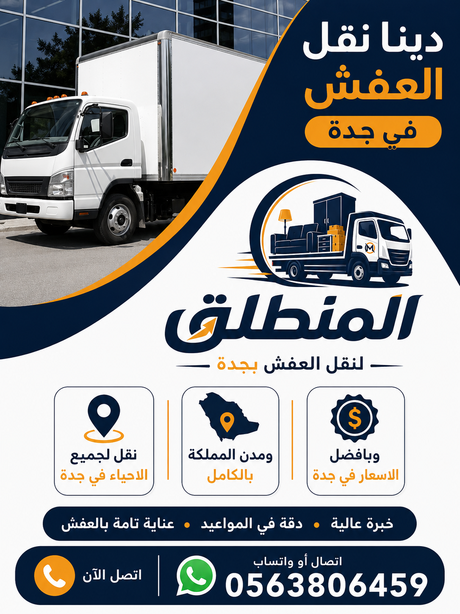

هل تبحث عن دينا نقل عفش في جدة بأسعار اقتصادية وخدمة احترافية وسريعة؟ شركة المنطلق لنقل العفش بجدة هي الخيار الأمثل لك. نوفر أسطولاً كاملاً من سيارات نقل الأثاث المجهزة بأحجام مختلفة (3 طن – 5 طن – 7 طن) مع عمالة مدربة، ونش رفع عفش هيدروليكي، تغليف احترافي، وخدمات فك وتركيب على يد نجارين محترفين. نخدم جميع أحياء جدة على مدار الساعة بأسعار تبدأ من 200 ريال فقط. تعرف على خدمات نقل العفش في جدة واحصل على عرض سعر مجاني الآن.
دينا نقل عفش في جدة متوفرة على مدار الساعة لجميع الأحياء
اتصل الآن 0563806459إذا كنت تبحث عن دينا نقل عفش في جدة فأنت في المكان الصحيح، حيث تقدم لك شركة المنطلق لنقل العفش بجدة أفضل خدمة متكاملة لنقل الأثاث المنزلي والمكتبي في جميع أنحاء مدينة جدة. إن عملية الانتقال من منزل إلى آخر أو من مكتب إلى مقر جديد تمثل تحدياً كبيراً لكثير من الأسر والشركات، وتحتاج إلى دينا نقل عفش في جدة موثوقة ومجهزة بأحدث المعدات لضمان وصول الأثاث بأمان وسلامة تامة دون أي خدوش أو كسور. نحن في شركة المنطلق نمتلك أسطولاً كبيراً ومتنوعاً من سيارات نقل العفش المجهزة التي تناسب جميع الاحتياجات مهما كان حجم الأثاث أو المسافة المطلوبة، بداية من الدينا الصغيرة بسعة 3 طن المناسبة للشقق الصغيرة والاستوديوهات والمكاتب الفردية، وصولاً إلى الدينا الكبيرة بسعة 7 طن المخصصة لنقل عفش الفلل والقصور والمنازل الكبيرة التي تحتوي على كميات ضخمة من الأثاث والأجهزة الكهربائية. ما يميز خدمة دينا نقل عفش في جدة من شركة المنطلق هو أننا لا نقتصر على مجرد توفير سيارة للنقل، بل نقدم حزمة متكاملة من الخدمات تشمل الفك والتركيب والتغليف الاحترافي وونش رفع الأثاث الثقيل، مما يجعل تجربة النقل سلسة وخالية من المتاعب. يمكنك التعرف على تاريخنا الطويل وخبرتنا الواسعة في مجال نقل العفش في جدة من خلال زيارة صفحتنا المخصصة التي توضح جميع التفاصيل. كما أن فريقنا من العمالة المدربة يتعامل مع كل قطعة أثاث بمنتهى الحرص والاحترافية، حيث يقوم بالتحميل والتنزيل والترتيب داخل الدينا باستخدام أحزمة التثبيت والزوايا المطاطية لمنع أي حركة أثناء السير على الطريق. نحن نفخر بأننا أرخص دينا نقل عفش في جدة بدون المساس بجودة الخدمة، حيث تبدأ أسعارنا من 200 ريال فقط للنقل داخل الحي الواحد، وهذا يجعلنا الخيار الأمثل لكل من يبحث عن خدمة نقل عفش ذات جودة عالية بسعر مناسب. نغطي جميع أحياء جدة بدون استثناء، سواء كنت في شمال جدة مثل أحياء الأندلس والنزهة وأبحر الشمالية والمروة، أو في جنوب جدة مثل غليل والبوادي والصفا والفيصلية، أو في شرق جدة مثل مشرفة والسلامة والنعيم والربوة، أو في غرب جدة مثل الشاطئ والمرجان والحمراء والكورنيش. لمعرفة المزيد عن شركتنا وقيمنا وفلسفتنا في العمل، ندعوك لزيارة صفحة من نحن التي تستعرض مسيرتنا منذ التأسيس حتى اليوم. عند اتصالك بنا على الرقم 0563806459، سيقوم فريق خدمة العملاء بالاستماع إلى احتياجاتك وتقديم نصيحة مهنية حول الحجم المناسب من الدينا والخدمات الإضافية التي قد تحتاجها، ثم يتم إرسال مندوب لمعاينة الأثاث وتقديم عرض سعر مجاني ودقيق بدون أي التزام. جميع سياراتنا مزودة بأنظمة تتبع GPS حتى تطمئن على مسار عفشك في أي لحظة. إذا كنت تبحث عن أفضل شركة نقل عفش في جدة تجمع بين الجودة والسعر المناسب والخدمة الشاملة، فإن شركة المنطلق هي خيارك الأول والأخير. اتصل بنا الآن واحصل على خصم خاص للحجوزات الفورية.

تعتبر عملية اختيار الحجم المناسب من دينا نقل عفش في جدة من أهم الخطوات التي تؤثر بشكل مباشر على تكلفة النقل وسلامة الأثاث وسرعة الإنجاز. في شركة المنطلق لنقل العفش بجدة نوفر مجموعة متنوعة ومتكاملة من سيارات النقل التي تلبي جميع الاحتياجات مهما كانت كمية الأثاث أو طبيعة العملية. النوع الأول هو دينا نقل عفش صغيرة بسعة 3 طن، وهي الخيار المثالي لنقل أثاث الشقق الصغيرة (غرفة أو غرفتين) أو لنقل قطع أثاث محددة مثل كنبة أو طاولة طعام أو جهاز كهربائي واحد، وتتميز هذه الدينا بسهولة المناورة في الشوارع الضيقة والأحياء القديمة وقدرتها على الوصول إلى الأماكن التي لا تستطيع السيارات الكبيرة دخولها. النوع الثاني هو دينا نقل عفش متوسطة بسعة 5 طن، وهي الأكثر طلباً في جدة لأنها مناسبة لنقل شقة كاملة مكونة من 3 غرف مع الأجهزة الكهربائية والمطبخ، وتتميز بحوض واسع يتسع لترتيب الأثاث بشكل منظم مع مساحة كافية للتغليف والحماية. النوع الثالث هو دينا نقل عفش كبيرة بسعة 7 طن، وهي مخصصة لنقل عفش الفلل والمنازل الكبيرة والمكاتب التي تحتوي على كميات ضخمة من الأثاث، وتحتاج عادة إلى رحلة واحدة فقط مما يوفر الوقت والمال. بالإضافة إلى ذلك، نوفر سيارات نقل مغلقة (صندوق) لحماية الأثاث من العوامل الجوية مثل الغبار والأمطار والحرارة الشديدة، وهذا النوع مطلوب بكثرة خاصة في فصل الصيف في جدة عندما ترتفع درجات الحرارة ونسبة الرطوبة. كما نوفر دينات مجهزة برافعة هيدروليكية (ونش رفع) لرفع وتنزيل الأثاث الثقيل جداً مثل البيانو والخزائن الحديدية والماكينات الصناعية. لمعرفة كامل تفاصيل أسطولنا والخدمات المتاحة، يمكنك الاطلاع على صفحة خدماتنا التي تشرح بالتفصيل كل نوع من السيارات مع الصور والمواصفات. جميع سيارات دينا نقل العفش في جدة لدينا تخضع لصيانة دورية شاملة كل أسبوعين لضمان عدم تعطلها أثناء النقل، وهي مزودة بأحزمة تثبيت متعددة وبطانة داخلية من الفوم لحماية الأثاث من الاحتكاك والاهتزاز أثناء الحركة. نحن ننصح عملاءنا دائماً باختيار الحجم المناسب للدينا بناءً على تقييم دقيق لكمية الأثاث، ولهذا نقدم خدمة المعاينة المجانية حيث يأتي مندوبنا لرؤية الأثاث وتحديد الحجم الأمثل. إذا كنت تريد معرفة المزيد عن كيفية اختيار الشركة المناسبة لنقل عفشك، ننصحك بقراءة مقالنا التفصيلي على كيفية اختيار شركة نقل عفش الذي يحتوي على نصائح عملية ومعايير مهمة. أسعار دينا نقل عفش في جدة تختلف حسب حجم السيارة: الدينا الصغيرة تبدأ من 200 ريال، المتوسطة من 400 ريال، والكبيرة من 700 ريال. اتصل بنا على 0563806459 لنساعدك في اختيار الدينا المناسبة لك بأفضل سعر.
من أبرز المشكلات التي تواجه سكان جدة عند نقل الأثاث هي صعوبة إنزال أو رفع القطع الكبيرة والثقيلة من وإلى الأدوار المرتفعة، خاصة في المباني التي لا تحتوي على مصاعد واسعة أو التي تكون ممراتها وسلالمها ضيقة. لهذا السبب توفر شركة المنطلق لنقل العفش بجدة خدمة دينا ونش رفع عفش في جدة كحل عملي وآمن وسريع لهذه المشكلة. نمتلك سيارات دينا مجهزة برافعات هيدروليكية ألمانية الصنع ومعتمدة دولياً تصل إلى ارتفاع 15 متراً (ما يعادل الدور الخامس تقريباً)، وبقوة رفع تصل إلى طنين كاملين، وهذا يعني أنها قادرة على رفع أثقل القطع مثل الخزائن الحديدية الكبيرة والبيانو والأجهزة الصناعية الضخمة والكنب الزاوية الكبيرة التي لا يمكن تمريرها عبر الأبواب والسلالم العادية. عملية الرفع بالونش تتم وفق إجراءات سلامة صارمة يشرف عليها فنيون متخصصون مدربون على استخدام الرافعات الهيدروليكية، حيث يقومون أولاً بتقييم الموقع وتحديد أفضل نقطة لوقوف الدينا، ثم يتم تثبيت الأثاث على منصة الرفع باستخدام أحزمة وسلاسل متخصصة، وبعد ذلك يتم الرفع ببطء وثبات مع وجود شخص في الشرفة أو النافذة لاستقبال الأثاث وإدخاله بأمان. هذه الخدمة توفر عليك كثيراً من الوقت والجهد مقارنة بالطريقة التقليدية (استخدام العمال لحمل الأثاث عبر السلالم)، كما أنها أكثر أماناً لأنها تتجنب احتكاك الأثاث بالجدران والأبواب والسلالم مما يقلل من مخاطر الخدوش والكسور بشكل كبير. خدمة دينا ونش رفع عفش في جدة مطلوبة بشكل خاص لرفع الأثاث ذي القيمة العالية مثل التحف والأنتيكات والمرايا الكبيرة والثريات الفاخرة. لمعرفة المزيد عن كيفية دمج خدمة الونش مع خدمات فك وتركيب العفش في جدة، يمكنك زيارة صفحتنا المخصصة التي توضح جميع التفاصيل والأسعار. أسعار خدمة الونش تبدأ من 250 ريال للساعة الواحدة، وعادة ما يستغرق رفع أثاث شقة كاملة من ساعة إلى ساعتين حسب الكمية والارتفاع. ننصح عملاءنا بحجز خدمة الونش قبل يومين على الأقل لضمان توفر المعدات، لكننا نستجيب أيضاً لطلبات الطوارئ ونصل خلال ساعتين في أغلب الحالات. كما يمكنك الاطلاع على تجارب العملاء السابقين الذين استفادوا من خدمة الونش عبر أفضل شركات نقل العفش في جدة. للحجز أو الاستفسار، يرجى التواصل معنا عبر الهاتف أو الواتساب على الرقم 0563806459 وسنكون سعداء بخدمتك.
يعد تغليف العفش من أهم الخطوات التي تحدد مدى سلامة الأثاث أثناء عملية النقل بواسطة دينا نقل عفش في جدة، وكثير من العملاء الذين يتجاهلون هذه الخطوة يكتشفون بعد وصول الأثاث إلى المنزل الجديد وجود خدوش وكسور كان يمكن تجنبها بسهولة لو تم تغليف الأثاث بشكل صحيح قبل النقل. في شركة المنطلق لنقل العفش بجدة، نقدم خدمة تغليف العفش الاحترافي كحزمة متكاملة مع خدمة الدينا بأسعار مناسبة جداً. فريقنا المدرب يستخدم أفضل مواد التغليف المتوفرة في السوق السعودي والمستوردة خصيصاً لحماية الأثاث: البلاستيك الفقاعي (البابل راب) الذي يمتص الصدمات ويحمي الأسطح الحساسة، والكراتين المقواة ثلاثية الطبقات التي تحمي الأغراض الصغيرة والهشة مثل الأكواب والأطباق والتحف، والزوايا البلاستيكية الصلبة التي تثبت على أركان الأثاث وأرجله لمنع الكسر عند الارتطام، والأغطية القماشية السميكة التي تحمي الكنب والكراسي من الغبار والاتساخ، والشريط اللاصق القوي المخصص للتغليف الذي لا يترك أثراً على سطح الأثاث عند إزالته. عملية التغليف تتم بمنهجية دقيقة: نبدأ بتفكيك القطع القابلة للتفكيك، ثم نلف كل قطعة على حدة بطبقة من البلاستيك الفقاعي، ثم نضع الزوايا الواقية، ونثبت كل شيء بالشريط اللاصق. الأغراض الصغيرة والهشة مثل الأكواب والمرايا الصغيرة والإكسسوارات يتم وضعها في كراتين مبطنة بطبقة إضافية من الفوم ويكتب على كل كرتون محتوياته واسم الغرفة المستهدفة في المنزل الجديد لتسهيل عملية الترتيب. خدمة التغليف ضرورية بشكل خاص للأثاث الزجاجي والمرايا الكبيرة وطاولات الطعام ذات الأسطح الرخامية والأجهزة الإلكترونية الحساسة مثل التلفزيونات الكبيرة وأجهزة الصوت والكمبيوترات. لمزيد من التفاصيل حول أنواع التغليف والمواد المستخدمة، ندعوك لزيارة صفحة تغليف العفش في جدة التي تحتوي على شرح مفصل مع صور توضيحية. كما يمكنك الاطلاع على مقالنا التفصيلي حول كيفية تغليف العفش بشكل صحيح للحصول على نصائح عملية. أسعار التغليف تبدأ من 100 ريال للشقة الصغيرة وتصل إلى 400 ريال للفيلا الكاملة، ونقدم خصم 20% عند حجز التغليف مع خدمة دينا نقل العفش في جدة. إذا كنت تريد الحزمة الشاملة التي تضم النقل والتغليف والفك والتركيب، ننصحك بالاطلاع على خدمة نقل العفش مع التغليف التي توفر عليك أكثر من 25% مقارنة بحجز كل خدمة على حدة. اتصل بنا الآن على 0563806459 لحجز خدمة التغليف مع دينا نقل عفش في جدة.
تمثل خدمة فك وتركيب الأثاث ركيزة أساسية من ركائز النقل الاحترافي بواسطة دينا نقل عفش في جدة، لأن كثيراً من قطع الأثاث الحديثة مصممة بطريقة لا يمكن نقلها كقطعة واحدة عبر الأبواب والممرات العادية، وتحتاج إلى تفكيك دقيق قبل النقل ثم إعادة تركيب في الموقع الجديد. في شركة المنطلق لنقل العفش بجدة، لدينا فريق متخصص من النجارين المحترفين الذين يمتلكون خبرة تتجاوز 10 سنوات في التعامل مع جميع أنواع الأثاث: غرف النوم بجميع أنواعها (كلاسيك، مودرن، إيكيا، صيني، إيطالي، أمريكي)، والمطابخ بمختلف خاماتها (ألمنيوم، خشب طبيعي، MDF، PVC)، والمكاتب التنفيذية والمجالس العربية الكبيرة، وخزائن الملابس ذات الأبواب المنزلقة. يستخدم نجارونا أحدث الأدوات الاحترافية مثل المفكات الكهربائية اللاسلكية ومفكات التوركس وموازين الليزر ومسدسات الدبوس ومثاقب الحفر الدقيقة، مما يضمن سرعة العمل ودقة التركيب. عملية الفك تتم بمنهجية مدروسة: يقوم النجار أولاً بتصوير الأثاث قبل التفكيك للتوثيق، ثم يقوم بترقيم كل قطعة ووضع المسامير والبراغي في أكياس مرقمة لضمان عدم ضياع أي جزء، ثم يتم التفكيك بعناية فائقة مع الحرص على عدم إتلاف أي مفصل أو سطح. بعد الوصول إلى الموقع الجديد، يقوم الفريق بإعادة التركيب وفقاً للصور والأرقام المرجعية، مع اختبار كل درج ومفصلة وباب للتأكد من أنها تعمل بسلاسة تامة كما كانت في الأصل. لمزيد من التفاصيل حول هذه الخدمة، ندعوك لزيارة صفحة فك وتركيب العفش في جدة المخصصة. أسعار فك وتركيب غرفة نوم واحدة تبدأ من 150 ريال، والمطبخ من 200 ريال، والمجلس الكبير من 250 ريال. إذا كنت تملك غرف نوم كلاسيكية أو أثاثاً مستورداً ذا قيمة عالية، فإن فريقنا مدرب على التعامل مع هذه الأنواع بمنتهى الحذر والاحترافية. كما يمكنك الاستفادة من خدمة نقل غرف النوم في جدة أو نقل المطابخ في جدة كخدمات متخصصة نقدمها بأسعار تنافسية. النجارون متاحون على مدار الأسبوع ويمكن حجزهم في نفس يوم طلب دينا نقل عفش في جدة. نقدم ضماناً لمدة 30 يوماً على جميع أعمال الفك والتركيب. اتصل على 0563806459 لحجز نجار محترف مع الدينا.
لا تقتصر خدمة دينا نقل عفش في جدة على النقل داخل المدينة فحسب، بل تمتد لتشمل نقل الأثاث من جدة إلى جميع مدن المملكة العربية السعودية. شركة المنطلق لنقل العفش بجدة تمتلك أسطولاً مخصصاً من الدينات المجهزة للسفر الطويل، وهي مختلفة عن دينات النقل المحلي من حيث المواصفات والتجهيزات. دينات السفر الطويل مزودة بأنظمة تعليق هوائي متطورة لامتصاص صدمات الطريق والحفاظ على استقرار الأثاث أثناء القيادة على الطرق السريعة التي قد تحتوي على مطبات ومنعطفات، كما أنها مزودة بحوائط جانبية مرتفعة وسقف مغلق لحماية الأثاث من الغبار والرياح القوية والأمطار الموسمية. نقدم خدمة النقل بين المدن بأسعار تنافسية ومدروسة: نقل عفش من جدة إلى مكة المكرمة يبدأ من 600 ريال (المسافة حوالي 80 كم، الوقت المتوقع ساعة ونصف)، ومن جدة إلى الطائف من 800 ريال (المسافة حوالي 170 كم)، ومن جدة إلى المدينة المنورة من 1200 ريال (المسافة حوالي 420 كم)، ومن جدة إلى الرياض من 1500 ريال (المسافة حوالي 950 كم)، ومن جدة إلى الدمام والخبر من 1800 ريال. كل هذه الأسعار شاملة التحميل والتنزيل والتثبيت داخل الدينا بواسطة عمالة مدربة. نحن نتعامل مع نقل الأثاث بين المدن بمنتهى الجدية والاحترافية لأن المسافات الطويلة تزيد من مخاطر تعرض الأثاث للاهتزازات والصدمات، ولذلك نحرص على تغليف جميع القطع الحساسة وتثبيتها بأحزمة متعددة داخل الدينا مع وضع فواصل فوم بين القطع لمنع احتكاكها ببعضها البعض. كما نقدم خدمة متابعة الشحنة عبر نظام GPS المباشر حتى تطمئن على مسار عفشك وتعرف موعد وصوله بالضبط. يمكنك معرفة المزيد عن أسعارنا التفصيلية عبر أسعار نقل العفش في جدة أو زيارة صفحة شركات نقل العفش في جدة للمقارنة. نوصي بحجز دينا نقل عفش في جدة للسفر البعيد قبل أسبوع على الأقل لضمان التوفر واختيار الموعد المناسب. فريق السائقين لدينا يمتلك خبرة طويلة في القيادة على الطرق السريعة السعودية ويتبع جميع إجراءات السلامة المرورية. نضمن وصول الأثاث في الموعد المحدد مع تقديم تعويض كامل في حال حدوث أي تأخير أو ضرر. للاستفسار أو الحجز، تواصل معنا على 0563806459.
يهتم كل شخص يبحث عن دينا نقل عفش في جدة بمعرفة الأسعار الدقيقة والتفصيلية قبل اتخاذ قرار الحجز، ونحن في شركة المنطلق لنقل العفش بجدة نؤمن بالشفافية الكاملة ونقدم لعملائنا جدول أسعار واضح ومفصل يشمل جميع الخدمات المتاحة. أسعار دينا نقل عفش في جدة تتأثر بعدة عوامل رئيسية هي: حجم الدينا المطلوبة (صغيرة، متوسطة، كبيرة)، والمسافة بين الموقعين (داخل الحي، بين الأحياء، بين المدن)، وعدد الطوابق (الدور الأرضي أسهل وأرخص من الأدوار العليا)، وتوفر المصعد من عدمه، والخدمات الإضافية المطلوبة مثل الفك والتركيب والتغليف وخدمة الونش. نحن نتميز بأننا نقدم أرخص أسعار دينا نقل عفش في جدة مقارنة بالسوق مع الحفاظ على أعلى مستويات الجودة والاحترافية. الأسعار المعروضة في الجدول التالي هي أسعار تقريبية وقد تختلف قليلاً حسب الظروف الخاصة بكل عميل، ولذلك ننصح دائماً بالاتصال بنا للحصول على عرض سعر دقيق يناسب حالتك. نقدم أيضاً مجموعة من العروض والخصومات المميزة: خصم 15% للحجوزات عبر الموقع الإلكتروني، وخصم 10% للعملاء المتكررين (الذين استخدموا خدماتنا سابقاً)، وخصم 20% على الحزمة الشاملة (نقل + تغليف + فك وتركيب)، وعروض موسمية تصل إلى 25% في فترات الهدوء. كما نقدم خصم 50 ريال على أول خدمة للعملاء الجدد. جميع أسعارنا شاملة ضريبة القيمة المضافة ولا توجد رسوم خفية أو إضافية بعد الاتفاق. يمكنك الاطلاع على مقالنا التفصيلي عن أسعار نقل العفش في جدة للحصول على مقارنة شاملة. كما ننصحك بقراءة أسعار نقل عفش الفلل في جدة إذا كنت تملك فيلا وتحتاج تقديراً أدق للتكلفة. نحن نقوم بإرسال فاتورة مفصلة قبل بدء العمل تشمل كل بند على حدة، وبعد انتهاء النقل يتم الدفع بالكامل. نقبل الدفع نقداً أو بالتحويل البنكي. اتصل على رقمنا 0563806459 للحصول على عرض سعر مجاني ودقيق لخدمة دينا نقل عفش في جدة.
| نوع الخدمة | السعر التقريبي (ريال) | الوقت المتوقع | ملاحظات |
|---|---|---|---|
| دينا صغير (3 طن) نقل فقط داخل الحي | 200 – 350 | 1-2 ساعات | مناسب لشقة غرفة واحدة |
| دينا متوسط (5 طن) نقل شقة 3 غرف | 400 – 700 | 3-4 ساعات | شامل التحميل والتنزيل |
| دينا كبير (7 طن) نقل فيلا أو شقة كبيرة | 700 – 1200 | 5-7 ساعات | رحلة واحدة للكمية الكبيرة |
| دينا + ونش رفع عفش (بالساعة) | 250 – 400 | حسب الارتفاع | للأدوار العليا بدون مصعد |
| دينا + تغليف كامل (شقة 3 غرف) | 600 – 1000 | 4-5 ساعات | شامل مواد التغليف |
| دينا + فك وتركيب (غرفة نوم) | 150 – 300 | 2-3 ساعات | بواسطة نجار محترف |
| دينا + فك وتركيب كامل (فيلا) | 1200 – 2500 | 6-10 ساعات | شامل جميع الغرف |
| الحزمة الشاملة (نقل + تغليف + فك/تركيب) | 800 – 2000 | 5-8 ساعات | خصم 20% على الإجمالي |
| نقل عفش من جدة إلى مكة | 600 – 900 | نفس اليوم | شامل التحميل والتنزيل |
| نقل عفش من جدة إلى المدينة | 1200 – 1800 | نفس اليوم | دينا مجهزة للسفر |
| نقل عفش من جدة إلى الرياض | 1500 – 2500 | 1-2 أيام | تتبع GPS مباشر |
| نقل قطعة أثاث واحدة (ثلاجة/غسالة) | 100 – 200 | 30-60 دقيقة | داخل جدة |
عندما تحجز دينا نقل عفش في جدة من شركة المنطلق لنقل العفش بجدة، فأنت لا تحصل فقط على سيارة للنقل بل تحصل على مجموعة كاملة ومتنوعة من الخدمات الاحترافية التي تغطي كل جوانب عملية الانتقال من البداية حتى النهاية. الخدمة الأولى والأساسية هي نقل العفش المنزلي الذي يشمل نقل جميع محتويات المنزل من أثاث وأجهزة كهربائية وأغراض شخصية، ويمكنك معرفة تفاصيلها عبر خدمة نقل العفش السكني في جدة. الخدمة الثانية هي نقل عفش الفلل والمنازل الكبيرة التي تتطلب تخطيطاً مسبقاً وفريقاً أكبر ودينا بحجم كبير، ويمكنك الاطلاع على تفاصيلها عبر نقل عفش الفلل في جدة. الخدمة الثالثة هي نقل الأثاث المكتبي والتجاري الذي يشمل المكاتب والكراسي الإدارية وطاولات الاجتماعات والخزائن الملفات والأرشيف، ويمكنك معرفة المزيد عبر نقل أثاث المكاتب في جدة. الخدمة الرابعة هي نقل الأجهزة الكهربائية مثل الثلاجات والغسالات والمكيفات والتلفزيونات، مع فنيين متخصصين في فك وتركيب المكيفات وتوصيل الأجهزة، وتفاصيلها متوفرة على نقل الأجهزة الكهربائية في جدة. الخدمة الخامسة هي نقل المطابخ بجميع أنواعها مع فك وتركيب الرخام والأحواض والأدوات، ومعلومات كاملة عبر نقل المطابخ في جدة. الخدمة السادسة هي نقل غرف النوم بما فيها الدواليب الكبيرة والتسريحات والأسرّة، وتفاصيلها عبر نقل غرف النوم في جدة. الخدمة السابعة هي فك وتركيب وصيانة المكيفات سواء الشباك أو السبليت، بواسطة فنيين معتمدين، وتفاصيلها عبر نقل المكيفات في جدة. الخدمة الثامنة هي نقل أثاث الفنادق والشقق المفروشة، وتفاصيلها عبر نقل أثاث الفنادق في جدة. بالإضافة إلى هذه الخدمات، نقدم أيضاً: خدمة التنظيف بعد النقل، وترتيب الأثاث في المنزل الجديد حسب رغبة العميل، وتوصيل الأجهزة الكهربائية وتشغيلها، والتخلص من الأثاث القديم. كل هذه الخدمات متاحة لحجزها مع دينا نقل عفش في جدة بأسعار تنافسية وبحزم مخفضة. اتصل على 0563806459 لمعرفة تفاصيل أكثر.
عندما تقرر حجز دينا نقل عفش في جدة، فمن الطبيعي أن تبحث عن الشركة التي تقدم لك أفضل خدمة بأنسب سعر مع ضمان سلامة أثاثك. شركة المنطلق لنقل العفش بجدة تتميز بـ 12 ميزة تنافسية تجعلها الخيار الأول لآلاف العملاء في جدة. أولاً: أسطول حديث ومتنوع – نمتلك أكثر من 25 دينا بأحجام مختلفة (3 طن، 5 طن، 7 طن) جميعها تخضع لصيانة دورية كل أسبوعين ومزودة بمعدات الحماية والتثبيت. ثانياً: عمالة مدربة ومحترفة – جميع عمالنا خضعوا لبرامج تدريبية مكثفة على تقنيات التحميل والتنزيل والتغليف والفك والتركيب ويحملون شهادات خبرة وبطاقات صحية سارية. ثالثاً: أسعار تنافسية بدون رسوم مخفية – نقدم أسعاراً تبدأ من 200 ريال مع شفافية كاملة وفاتورة مفصلة. رابعاً: ضمان سلامة الأثاث – نقدم ضماناً خطياً على سلامة الأثاث أثناء النقل مع تعويض كامل في حال حدوث أي ضرر. خامساً: خدمة عملاء 24/7 – فريق خدمة العملاء متاح على مدار الساعة عبر الهاتف والواتساب للإجابة على استفساراتك. سادساً: سرعة الاستجابة – نصل إلى موقعك خلال ساعة واحدة من تأكيد الحجز. سابعاً: تغطية شاملة – نخدم جميع أحياء جدة ونقدم خدمة النقل بين المدن. ثامناً: خدمات متكاملة – نقل، تغليف، فك، تركيب، ونش، تخزين – كل شيء في مكان واحد. تاسعاً: تتبع GPS – جميع السيارات مزودة بأنظمة تتبع لمتابعة مسار عفشك. عاشراً: خبرة طويلة – أكثر من 10 سنوات في مجال نقل العفش في جدة. حادي عشر: عروض وخصومات مستمرة – عروض موسمية وخصومات للعملاء المتكررين تصل إلى 25%. ثاني عشر: سمعة ممتازة – أكثر من 1247 تقييم إيجابي بمتوسط 4.9 من 5 نجوم. يمكنك قراءة المزيد عن قصة نجاحنا وفلسفتنا في العمل عبر صفحة من نحن. كما ندعوك لقراءة تقييمات وآراء عملائنا السابقين الذين جربوا خدمة دينا نقل عفش في جدة وشاركوا تجاربهم الإيجابية. نحن نؤمن بأن العمل الجيد هو أفضل تسويق، ولذلك نحرص على أن يكون كل عميل سفيراً لنا يوصي بنا لعائلته وأصدقائه. أفضل شركة نقل عفش في جدة في انتظارك. اتصل الآن على 0563806459.
إذا كنت على وشك حجز دينا نقل عفش في جدة لأول مرة أو حتى لو كنت قد نقلت عفشك سابقاً، فإن اتباع هذه النصائح المهنية سيساعدك على توفير المال وحماية أثاثك والحصول على أفضل تجربة نقل ممكنة. النصيحة الأولى: خطط مبكراً واحجز قبل الموعد بأسبوع – الحجز المبكر يضمن لك توفر الدينا بالحجم الذي تريده في الموعد المناسب لك، خاصة في المواسم المزدحمة مثل فترة الصيف ونهاية العام الدراسي وإجازات الأعياد حيث يزداد الطلب بشكل كبير على خدمات دينا نقل عفش في جدة. النصيحة الثانية: فرز العفش والتخلص من غير المطلوب – قبل يوم النقل بأسبوع، قم بمراجعة جميع محتويات منزلك وفصل الأشياء التي لم تعد تحتاجها (ملابس قديمة، أجهزة معطلة، أثاث تالف)، فهذا يقلل من كمية الأثاث المنقول وبالتالي يقلل من حجم الدينا المطلوبة والتكلفة الإجمالية. النصيحة الثالثة: قس أبعاد الأثاث الكبير والممرات – تأكد من أن القطع الكبيرة مثل الكنب والسرير والدولاب ستمر من باب المنزل الجديد والممرات والمصعد، وإذا لم تكن متأكداً فأبلغ الشركة حتى نجهز خدمة ونش الرفع مسبقاً. النصيحة الرابعة: صوّر الأثاث القيّم قبل النقل – التقط صوراً واضحة لكل قطعة ثمينة من جميع الزوايا كتوثيق لحالتها قبل النقل. النصيحة الخامسة: اسأل عن سياسة التأمين والتعويض – تأكد من أن الشركة تقدم ضماناً على سلامة الأثاث واسأل عن سياسة التعويض في حال حدوث أي ضرر. يمكنك قراءة المزيد من النصائح المتخصصة عبر مقالنا على أخطاء شائعة في نقل العفش بجدة الذي يستعرض الأخطاء التي يقع فيها الكثيرون وكيفية تجنبها. النصيحة السادسة: احصل على عرض سعر مكتوب – لا تكتفِ بالسعر الشفهي بل اطلب عرضاً مكتوباً يشمل كل التفاصيل. النصيحة السابعة: تأكد من أن الدينا مجهزة بأحزمة التثبيت – السيارة المجهزة تحمي أثاثك أثناء النقل. النصيحة الثامنة: حضّر منطقة التحميل والتنزيل – تأكد من خلو المنطقة أمام المنزل لوقوف الدينا بسهولة. النصيحة التاسعة: أعدّ الأغراض الشخصية الصغيرة بنفسك – ضع الأوراق المهمة والمجوهرات والأدوية في حقيبة خاصة تحملها بنفسك. النصيحة العاشرة: قارن بين عروض الأسعار – احصل على 3 عروض أسعار من شركات مختلفة وقارن بينها، ولكن لا تختر الأرخص دائماً بل الأفضل من حيث الجودة والضمان. لمزيد من المعلومات، اطلع على كيف تختار شركة نقل عفش. نحن في شركة المنطلق نقدم استشارات مجانية لعملائنا قبل النقل. اتصل على 0563806459.
هل تحتاج إلى تخزين عفشك لفترة مؤقتة بسبب تجديد منزلك أو السفر لفترة طويلة أو عدم جاهزية المنزل الجديد لاستقبال الأثاث؟ خدمة تخزين العفش هي واحدة من أهم الخدمات المكملة لخدمة دينا نقل عفش في جدة التي تقدمها شركة المنطلق لنقل العفش بجدة. نمتلك مستودعات حديثة ومجهزة بأعلى المعايير في مناطق استراتيجية داخل جدة، وهي مصممة خصيصاً لتخزين الأثاث والأجهزة الكهربائية والأغراض المنزلية بأمان تام لفترات قصيرة أو طويلة. المستودعات مزودة بأنظمة تكييف مركزية للحفاظ على درجة حرارة ورطوبة مناسبة تمنع تلف الخشب والأقمشة والجلود، وأنظمة مراقبة بالكاميرات الحرارية والعادية تعمل على مدار الساعة مع تسجيل مستمر لمدة 90 يوماً، وأنظمة إنذار ضد الحريق والسرقة، وحراسة أمنية 24 ساعة. أرضيات المستودعات مغطاة بطبقة عازلة للرطوبة ونستخدم رفوفاً معدنية لرفع الأثاث عن مستوى الأرض لحماية إضافية. عند حجز خدمة التخزين مع دينا نقل عفش في جدة، يقوم فريقنا بنقل الأثاث من منزلك مباشرة إلى المستودع، حيث يتم تغليف كل قطعة بعناية قبل التخزين ووضع بطاقات تعريفية تحمل اسم العميل ورقم القطعة وتاريخ التخزين والمحتويات. يمكنك زيارة المستودع والاطمئنان على أثاثك في أي وقت خلال ساعات العمل، كما يمكنك طلب استرجاع أي قطعة بشكل فردي. أسعار التخزين تبدأ من 40 ريال للمتر المكعب شهرياً للعقود قصيرة المدة، ونقدم خصم 25% للعقود الطويلة (أكثر من 6 أشهر) وخصم 15% للعملاء المتكررين. عند انتهاء فترة التخزين نقوم بتوصيل الأثاث إلى منزلك الجديد بواسطة ديناتنا بأسعار مخفضة. لمزيد من التفاصيل عن خدمة التخزين، ندعوك لزيارة صفحة تخزين العفش في جدة. الخدمة متاحة للأفراد والشركات وأصحاب المتاجر الإلكترونية الذين يحتاجون لتخزين مخزون بضائعهم. يمكنك أيضاً الجمع بين التخزين وخدمة نقل العفش مع التغليف للحصول على حزمة شاملة ومخفضة. تواصل معنا على 0563806459 لحجز مساحة تخزين آمنة لأثاثك.
بالإضافة إلى نقل الأثاث المنزلي، تقدم شركة المنطلق لنقل العفش بجدة خدمة متخصصة في نقل أثاث المكاتب والشركات والمؤسسات التجارية بأسعار تنافسية ومرنة تناسب احتياجات القطاع الخاص والحكومي. نحن ندرك أن نقل مقر الشركة أو المكتب إلى موقع جديد هو عملية حساسة تتطلب تخطيطاً دقيقاً وتنفيذاً سريعاً لتقليل فترة التوقف عن العمل إلى أقصى حد ممكن، ولذلك نقدم حلولاً مخصصة تشمل العمل خارج ساعات الدوام الرسمي (ليلاً وفي عطلات نهاية الأسبوع) حتى لا تتأثر إنتاجية الموظفين. فريقنا مدرب على التعامل مع الأجهزة المكتبية الحساسة مثل أجهزة الكمبيوتر والشاشات والطابعات والماسحات الضوئية والسيرفرات ومعدات الشبكات، حيث يقوم بفصلها وتغليفها بمواد مضادة للكهرباء الساكنة (antistatic) ونقلها في كراتين مبطنة خصيصاً لحمايتها من الصدمات. كما نقدم خدمة فك وتركيب الأثاث المكتبي بما في ذلك المكاتب التنفيذية وطاولات الاجتماعات والكراسي الإدارية والخزائن والأرفف والبارتشنات (حواجز المكاتب). لمعرفة المزيد عن هذه الخدمة، يمكنك زيارة نقل أثاث المكاتب في جدة أو الاطلاع على صفحة خدماتنا الشاملة. نحن نقدم عقوداً سنوية وربع سنوية للشركات التي تحتاج خدمات نقل دورية، مثل شركات الأحداث والمعارض والشركات التي لديها فروع متعددة. الأسعار التعاقدية تتضمن خصومات تصل إلى 30% مقارنة بالأسعار الفردية. كما نوفر دينا نقل عفش في جدة مخصصة لنقل بضائع المتاجر والمحلات التجارية ومخزون المستودعات. نحن نتعامل أيضاً مع نقل أثاث الفنادق والشقق المفروشة، وتفاصيل هذه الخدمة متوفرة على نقل أثاث الفنادق في جدة. نقدم ضمان سلامة كامل على جميع المنقولات مع تقرير مفصل بحالة كل قطعة قبل وبعد النقل. للاستفسار عن العقود والأسعار الخاصة بالشركات، اتصل بقسم المبيعات على 0563806459.
عندما تبحث عن دينا نقل عفش في جدة، ستجد عشرات الشركات والأفراد الذين يعرضون خدماتهم، وقد يكون الاختيار صعباً خاصة إذا لم تكن لديك خبرة سابقة في التعامل مع شركات النقل. لذلك نقدم لك هذه المقارنة الموضوعية التي تساعدك على اتخاذ القرار الصحيح. عند مقارنة شركة المنطلق لنقل العفش بجدة مع الشركات الأخرى في السوق، نجد أن هناك فوارق جوهرية في عدة نقاط رئيسية. من حيث الأسعار: بعض الشركات تقدم أسعاراً منخفضة جداً لكنها تضيف رسوماً مخفية بعد بدء العمل (رسوم الدور، رسوم التثبيت، رسوم الخروج من الحي)، بينما نحن في شركة المنطلق نقدم سعراً شاملاً ونهائياً لا يتغير بعد الاتفاق مع فاتورة مفصلة واضحة. من حيث المعدات والسيارات: كثير من مقدمي الخدمة يستخدمون سيارات بيك أب صغيرة غير مجهزة بأحزمة تثبيت أو بطانات حماية، مما يعرض الأثاث لخطر الخدش والكسر، بينما جميع سياراتنا مجهزة بمعدات حماية احترافية وبطانة داخلية وأحزمة تثبيت متعددة. من حيث العمالة: بعض الشركات تستعين بعمالة غير مدربة وبدون خبرة، بينما عمالنا جميعهم مدربون ومؤمنون ويحملون شهادات خبرة. من حيث الضمان: معظم الشركات لا تقدم أي ضمان على سلامة الأثاث، بينما نحن نقدم ضماناً خطياً مع تعويض في حال حدوث أي ضرر. من حيث الخدمات الإضافية: شركة المنطلق تقدم كل شيء في مكان واحد (نقل، تغليف، فك وتركيب، ونش، تخزين) بينما الشركات الأخرى عادة تقتصر على النقل فقط. يمكنك قراءة مقارنة أكثر تفصيلاً عبر مقالنا على أفضل شركات نقل العفش في جدة الذي يستعرض معايير الاختيار بالتفصيل.
| معيار المقارنة | شركة المنطلق ✅ | الشركات الأخرى |
|---|---|---|
| أسعار شفافة بدون رسوم مخفية | ✅ نعم – فاتورة مفصلة | ❌ غالباً رسوم إضافية |
| سيارات مجهزة بمعدات حماية | ✅ أحزمة + بطانة + زوايا | ❌ بيك أب بدون تجهيزات |
| عمالة مدربة ومؤمنة | ✅ شهادات خبرة + تأمين | ❌ عمالة غير مدربة |
| ضمان سلامة الأثاث | ✅ ضمان خطي + تعويض | ❌ لا ضمان |
| خدمة عملاء 24/7 | ✅ هاتف + واتساب | ❌ ساعات محدودة |
| خدمات متكاملة (تغليف/فك/ونش) | ✅ كل الخدمات في مكان واحد | ❌ نقل فقط |
| تتبع GPS للشحنة | ✅ تتبع مباشر | ❌ غير متوفر |
| تقييمات العملاء | ✅ 4.9/5 (1247 تقييم) | ⚠ تقييمات قليلة |
ننصحك بقراءة المزيد عبر شركات نقل العفش في جدة وأفضل شركة نقل أثاث بجدة لاتخاذ القرار الصحيح. اتصل بنا الآن على 0563806459 لتجرب الفرق بنفسك.
نفخر في شركة المنطلق لنقل العفش بجدة بأننا حصلنا على ثقة أكثر من 1247 عميلاً في جدة قدموا تقييمات إيجابية عن خدمة دينا نقل عفش في جدة بمتوسط تقييم 4.9 من 5 نجوم. هذه الثقة لم تأتِ من فراغ بل هي نتيجة سنوات طويلة من العمل الجاد والالتزام بتقديم أعلى مستويات الجودة والاحترافية في كل عملية نقل. نحن نؤمن بأن أفضل تسويق هو رضا العملاء وتوصياتهم لعائلاتهم وأصدقائهم. إليك بعض تجارب العملاء الحقيقية:
"حجزت دينا نقل عفش في جدة من شركة المنطلق لنقل شقتي من النزهة إلى الأندلس. الدينا وصلت في أقل من نصف ساعة من الاتصال، والعمال كانوا 4 أشخاص محترفين تعاملوا مع أثاثي بحرص شديد. تم تغليف المرايا والزجاج بشكل ممتاز، ولم يتعرض أي شيء لأي خدش. السعر كان 450 ريال شامل كل شيء. أنصح الجميع بالتعامل مع شركة المنطلق."
"استخدمت خدمة دينا نقل عفش في جدة مع تغليف كامل وفك وتركيب لنقل فيلتي من الشاطئ إلى أبحر. الفريق كان مكون من 6 أشخاص: 2 نجارين و4 عمال نقل. قاموا بفك غرف النوم والمطبخ والمجلس خلال 3 ساعات، ونقلوا كل شيء بدينا كبيرة مجهزة، ثم أعادوا التركيب في المنزل الجديد بشكل ممتاز. الخدمة الشاملة كلفتني 1800 ريال وهو سعر عادل جداً مقارنة بما حصلت عليه."
"أفضل دينا نقل عفش في جدة بدون منازع! نقلت شقتي (3 غرف + صالة + مطبخ) من السلامة إلى مشرفة خلال 4 ساعات فقط. السيارة كانت نظيفة ومجهزة بأحزمة تثبيت وبطانات فوم. العمال كانوا محترمين ومنظمين. سعر مناسب جداً (550 ريال). سبق تعاملت مع 3 شركات قبلهم وشركة المنطلق هي الأفضل بفارق كبير."
"كنت قلقة جداً على أثاثي الإيطالي الثمين لكن فريق شركة المنطلق طمأنني تماماً. استخدموا ونش رفع لإنزال الدولاب الكبير من الدور الثالث لأنه ما كان يمر من الباب، وغلّفوا كل قطعة بعناية فائقة. وصل كل شيء سليم 100%. خدمة دينا نقل عفش في جدة من المنطلق هي الأفضل فعلاً."
"نقلنا مقر شركتنا بالكامل (15 مكتب + سيرفر رووم + غرفة اجتماعات) من حي الروضة إلى حي الصفا. تم العمل ليلة الخميس والجمعة حتى لا يتأثر العمل. فريق شركة المنطلق كان محترفاً جداً في التعامل مع الأجهزة الحساسة. خدمة ممتازة ونوصي بها لكل الشركات."
يمكنك قراءة المزيد من تجارب العملاء وقصص النجاح عبر صفحة من نحن أو زيارة مدونتنا للحصول على نصائح من عملاء سابقين. نحن نسعد بكل تقييم نتلقاه ونعمل باستمرار على تطوير خدماتنا بناءً على ملاحظات عملائنا. إذا كنت قد استخدمت خدمة دينا نقل عفش في جدة من شركة المنطلق، نرحب بتقييمك. وإذا لم تجرب بعد، ندعوك للاتصال على 0563806459 ولتكن أنت العميل القادم الراضي. تواصل معنا الآن.
أسعار دينا نقل عفش في جدة تبدأ من 200 ريال للنقل داخل الحي بدينا صغيرة (3 طن)، ومن 400 ريال لنقل شقة 3 غرف بدينا متوسطة (5 طن)، وتصل إلى 2500 ريال للخدمة الشاملة (نقل + تغليف + فك وتركيب) لفيلا كاملة. اطلع على التفاصيل الكاملة عبر أسعار نقل العفش في جدة.
نعم، نوفر دينا مجهزة بونش رفع عفش هيدروليكي يصل ارتفاعه إلى 15 متراً وبقوة رفع تصل إلى طنين. مثالي لرفع الأثاث الثقيل للأدوار العليا بدون مصعد. تبدأ الأسعار من 250 ريال/ساعة. تعرف على المزيد عبر نقل العفش في جدة.
نعم، نقدم خدمة تغليف العفش الاحترافي بمواد عالية الجودة (بابل راب، كراتين مقواة، زوايا بلاستيكية) لحماية الأثاث من الخدوش والكسر. التغليف يبدأ من 100 ريال. تعرف على التفاصيل عبر تغليف العفش في جدة.
نعم، لدينا نجارون محترفون يقومون بفك وتركيب جميع أنواع الأثاث (غرف نوم، مطابخ، مكاتب، مجالس) بأحدث الأدوات. الأسعار تبدأ من 150 ريال. اطلع على التفاصيل عبر فك وتركيب العفش في جدة.
نوفر دينا صغيرة (3 طن) للشقق الصغيرة، دينا متوسطة (5 طن) للشقق الكبيرة، دينا كبيرة (7 طن) للفلل، بالإضافة إلى سيارات مغلقة ودينات بونش رفع. زور صفحة خدماتنا لمعرفة المزيد.
نعم، نغطي جميع أحياء جدة بدون استثناء: شمال جدة (الأندلس، أبحر)، جنوب جدة (غليل، البوادي)، شرق جدة (مشرفة، السلامة)، غرب جدة (الشاطئ، المرجان). اطلع على شركة نقل عفش في جدة.
نقل شقة غرفتين يستغرق 2-3 ساعات، وشقة 3 غرف 3-5 ساعات، والفيلا 6-10 ساعات. الوقت يختلف حسب الكمية وتوفر المصعد. اقرأ نصائح التوفير عبر أخطاء نقل العفش في جدة.
نعم، ننقل من جدة إلى مكة (من 600 ريال)، المدينة (من 1200 ريال)، الرياض (من 1500 ريال)، الدمام، الطائف، تبوك وأبها. اطلع على أسعار نقل العفش بين المدن.
نعم، جميع عمالنا مدربون تدريباً مهنياً على تقنيات التعامل مع الأثاث الثمين والحساس. اقرأ المزيد عن معاييرنا عبر صفحة من نحن.
نعم، نستقبل طلبات نقل القطعة الواحدة (ثلاجة، غسالة، كنبة) بأسعار تبدأ من 100 ريال. تعرف على خدماتنا عبر نقل الأجهزة الكهربائية في جدة.
نعم، نقدم تخزين العفش في مستودعات مؤمنة ومكيفة بأسعار تبدأ من 40 ريال/م³ شهرياً. اطلع على تخزين العفش في جدة.
نعم، جميع سياراتنا مؤمنة تأميناً شاملاً ونقدم ضماناً خطياً على سلامة الأثاث. تواصل معنا لمعرفة تفاصيل الضمان.
نعم، خدمة دينا نقل عفش في جدة متاحة 24 ساعة، 7 أيام بما فيها الجمعة والأعياد. نستجيب لطلبات الطوارئ خلال ساعة. تعرف على المزيد.
اتصل على 0563806459 أو تواصل عبر الواتساب. نرسل مندوب للمعاينة المجانية ثم عرض سعر، وعند الموافقة نحدد الموعد ونصل في الوقت المتفق عليه. زور موقعنا لمزيد من التفاصيل.
الدينا الصغيرة (3 طن) لشقة غرفة أو غرفتين (من 200 ريال)، والكبيرة (5-7 طن) لشقة 3+ غرف أو فيلا (من 400 ريال). اختيار الحجم المناسب يوفر المال. اقرأ المزيد عبر كيف تختار شركة نقل عفش.
نعم، ننقل الثلاجات والغسالات والمكيفات والتلفزيونات مع فنيين متخصصين في الفك والتركيب. تفاصيل الخدمة عبر نقل المكيفات في جدة ونقل الأجهزة الكهربائية.
نعم! خصم 15% للحجوزات عبر الموقع، 10% للعملاء المتكررين، 20% على الحزمة الشاملة، وعروض موسمية تصل لـ 25%. اطلع على أسعار نقل الفلل.
نعم، لدينا نجارون متخصصون في فك ونقل وتركيب المطابخ بجميع أنواعها وغرف النوم الكبيرة والكلاسيكية. التفاصيل عبر نقل المطابخ في جدة ونقل غرف النوم في جدة.
شركة المنطلق لنقل العفش بجدة تقدم لك أفضل خدمة دينا نقل عفش في جدة بسيارات مجهزة بأحجام مختلفة، عمالة مدربة ومحترفة، ونش رفع للأثاث الثقيل، تغليف احترافي، وفك وتركيب على يد نجارين محترفين. نخدم جميع أحياء جدة على مدار الساعة بأسعار تبدأ من 200 ريال فقط. أكثر من 1247 عميل راضٍ بتقييم 4.9/5. احصل على عرض سعر مجاني الآن!